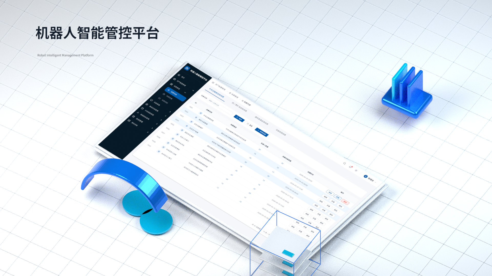

场景与设备建立关联
以场景组织机器人、路线与任务点。

机器人智能管控平台面向煤矿工作面巡检场景，围绕任务规划、机器人执行、实时监控与远程控制展开设计。
以工作面为巡检场景，关联执行机器人、任务路线及任务点，通过业务管理页面与可视化大屏呈现场景、设备状态和任务执行信息，让后台配置与现场监控形成连续的工作路径。
工作内容：需求分析 / 交互设计 / UI设计 / 可视化大屏 项目阶段：部分需求与设计阶段以场景组织机器人、路线与任务点。
从后台部署进入现场执行与监控。
用稳定层次组织任务、视频与状态。
按现有业务任务梳理使用视角，以查看、配置和维护任务区分信息重点。
在线状态、当前任务、视频画面、现场异常与执行信息。
场景选择、机器人关联、任务点、功能点与控制参数。
设备状态、关联场景、采集信息与具体异常定位。
场景是组织入口，机器人是执行对象，任务与采集信息共同支撑现场判断。
从原有后台和大屏整理展示规范，分别组织浅色操作界面与深色现场信息。
主操作蓝色 / 青蓝数据强调 / 中性文字层级
主操作、次操作和输入边界保持清晰。
| 参数名称 | 字段 | 输入方式 |
|---|---|---|
| 速度 | 0x8006 | 数字输入 |
| 方向 | 0x8006 | 选项配置 |
以功能点归组，区分参数配置与操作配置。
中央展示工作面与机器人位置，两侧组织视频、报警、环境采集及控制信息。
从场景列表定位工作面。
确认当前执行对象。
组织路线、任务点和参数。
结合现场状态查看执行信息。
在明确场景与机器人的上下文中组织控制方式与参数，让对象选择、参数设置和状态查看各有位置。
先确定工作面与机器人。
定点、音量或手动控制。
速度、方向与操作配置。
连接控制操作与设备反馈。
固定侧栏承载业务入口，顶部定位当前页面，内容区以卡片和分组组织任务。把导航、对象与操作分开，保持稳定的阅读顺序。
大屏聚合机器人状态与任务信息，后台负责场景关联、参数及控制方式。
通过场景列表组织业务入口，连接部署与控制任务。
摄像头与现场画面、报警与环境采集、机器人状态和控制信息分区组织，中央主场景保持为视觉锚点。
控制对象、速度、方向与启停操作在同一任务上下文中呈现。
以功能点归组参数配置与操作配置，字段、输入方式和范围保持对应，添加与编辑入口靠近相关内容。
将场景、机器人与任务点组织到同一部署页面。
保留原稿中的两种主视觉动效：五组机器人顺时针环绕，悬停暂停并放大；橙色机器人沿轨道巡检移动。